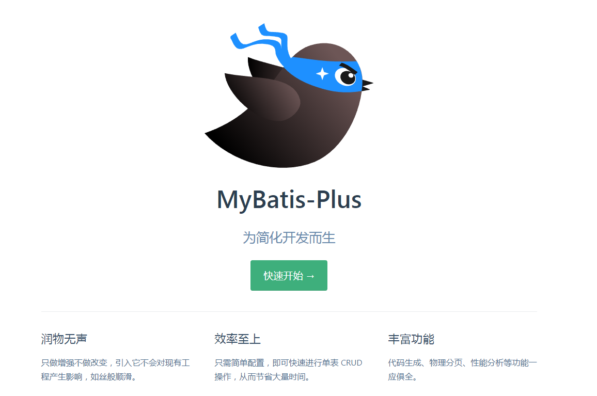
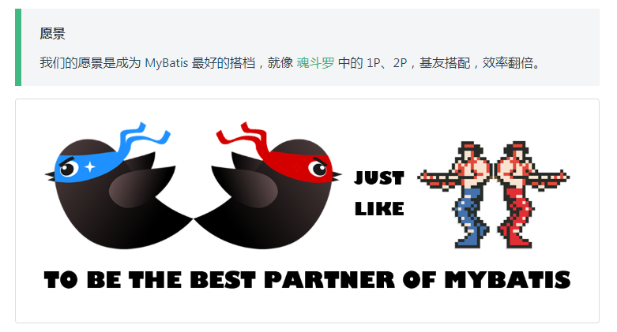
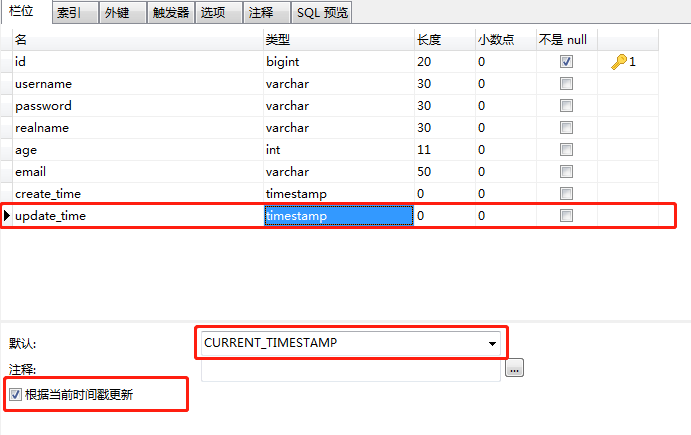
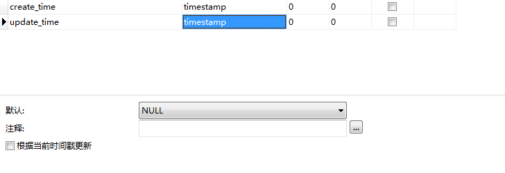

MybatisPlus概述
MybatisPlus可以节省大量的工作时间，所有的CRUD代码都可以自动化完成！

MyBatis-Plus（简称 MP）是一个 MyBatis 的增强工具，在 MyBatis 的基础上只做增强不做改变，为简化开发、提高效率而生。

特性
- 无侵入：只做增强不做改变，引入它不会对现有工程产生影响，如丝般顺滑
- 损耗小：启动即会自动注入基本 CURD，性能基本无损耗，直接面向对象操作
- 强大的 CRUD 操作：内置通用 Mapper、通用 Service，仅仅通过少量配置即可实现单表大部分 CRUD 操作，更有强大的条件构造器，满足各类使用需求
- 支持 Lambda 形式调用：通过 Lambda 表达式，方便的编写各类查询条件，无需再担心字段写错
- 支持主键自动生成：支持多达 4 种主键策略（内含分布式唯一 ID 生成器 - Sequence），可自由配置，完美解决主键问题
- 支持 ActiveRecord 模式：支持 ActiveRecord 形式调用，实体类只需继承 Model 类即可进行强大的 CRUD 操作
- 支持自定义全局通用操作：支持全局通用方法注入（ Write once, use anywhere ）
- 内置代码生成器：采用代码或者 Maven 插件可快速生成 Mapper 、 Model 、 Service 、 Controller 层代码，支持模板引擎，更有超多自定义配置等您来使用
- 内置分页插件：基于 MyBatis 物理分页，开发者无需关心具体操作，配置好插件之后，写分页等同于普通 List 查询
- 分页插件支持多种数据库：支持 MySQL、MariaDB、Oracle、DB2、H2、HSQL、SQLite、Postgre、SQLServer 等多种数据库
- 内置性能分析插件：可输出 Sql 语句以及其执行时间，建议开发测试时启用该功能，能快速揪出慢查询
- 内置全局拦截插件：提供全表 delete 、 update 操作智能分析阻断，也可自定义拦截规则，预防误操作
总结：
简单的mapper层CRUD已经完备，不需要写sql即可使用
拥有打印、分析sql执行日志的功能
ID生成策略
自动填充功能，可自动填充数据创建时间及自动更新数据修改时间
拥有内置分页插件，使用page对象即可操作分页
可自动处理逻辑删除操作，将删除操作自动改为修改操作
丰富的条件查询器wrapper
拥有代码生成器，经过配置可自动需要的mapper层，service层，entity及controller层（仅类，接口需自己实现）代码，
经配置entity中可自动生成swagger、id生成策略、乐观锁控制、逻辑删除控制、自动填充功能及lombok等注解
注：
注：使用mybatis-plus可以节省大量的代码，但尽量不要同时导入 mybatis 和 mybatis-plus，由于引用的依赖版本差异可能导致报错
规范
所有数据库表：gmt_create、gmt_modified（创建、修改时间）几乎所有的表都要配置上，而且需要自动化
方式一：数据库级别（工作中不允许修改数据库）
在表中新增字段create_time（timestamp），update_time（timestamp）
设置默认值为 CURRENT_TIMESTAMP
勾选update_time下的根据当前时间戳更新
注： Navicat中datetime类型的不能选择根据当前时间戳更新

方式二：代码级别
- 删除数据库的默认值及更新操作！

- 实体类上加固有注解
1 | // 字段添加填充内容 |
- 编写处理器来处理这个注解
1 | import com.baomidou.mybatisplus.core.handlers.MetaObjectHandler; |
多租户
实现方法
- 独立数据库
即一个租户一个数据库，这种方案的用户数据隔离级别最高，安全性最好，但成本较高。
优点：为不同的租户提供独立的数据库，有助于简化数据模型的扩展设计，满足不同租户的独特需求；如果出现故障，恢复数据比较简单。
缺点：增多了数据库的安装数量，随之带来维护成本和购置成本的增加。
- 共享数据库，独立 Schema
也就是说 共同使用一个数据库 使用表进行数据隔离
多个或所有租户共享Database，但是每个租户一个Schema（也可叫做一个user）。底层库比如是：DB2、ORACLE等，一个数据库下可以有多个SCHEMA。
优点：为安全性要求较高的租户提供了一定程度的逻辑数据隔离，并不是完全隔离；每个数据库可支持更多的租户数量。
缺点：如果出现故障，数据恢复比较困难，因为恢复数据库将牵涉到其他租户的数据；
- 共享数据库，共享 Schema，共享数据表
也就是说 共同使用一个数据库一个表 使用字段进行数据隔离
即租户共享同一个Database、同一个Schema，但在表中增加TenantID多租户的数据字段。这是共享程度最高、隔离级别最低的模式。
简单来讲，即每插入一条数据时都需要有一个客户的标识。这样才能在同一张表中区分出不同客户的数据，这也是我们系统目前用到的(tenant_id)
优点：三种方案比较，第三种方案的维护和购置成本最低，允许每个数据库支持的租户数量最多。
缺点：隔离级别最低，安全性最低，需要在设计开发时加大对安全的开发量；数据备份和恢复最困难，需要逐表逐条备份和还原。